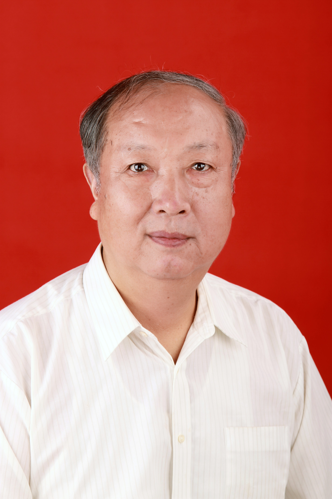

云-端融合资源服务化研究与实践
（待定）

Gang Huang (黄罡)
云计算和大数据催生了信息化第三波浪潮，服务成为主要应用形态，开始呈现云感知、端融合、数据驱动的云-端融合特征，由此带来了云计算和大数据系统软件的重大挑战——信息系统（尤其是源码、文档甚至团队缺失以及需求演化和技术演进等因素形成的信息孤岛） 的互联互通以及相关软硬件和数据资源的管理。传统的二次开发技术途径难以支持数以百万计的政企内部信息系统、移动应用和物联网应用的互联互通和资源管理，北京大学提出了一种全新的云-端融合资源服务化技术途径，在没有目标系统源码和文档、不开放后台数据库和服务器、遵循既有访问和安全机制的前提下，自动生成信息孤岛互操作接口，进而实现对其中软硬件和数据资源的规模化管理，高效率、高质量、低成本、低风险地打破了信息孤岛。本报告将阐述云-端融合资源服务化的技术原理、实现和实践，并探讨服务计算在云-端融合时代的挑战和机遇。
黄罡，博士，湖南株洲人，北京大学教授、博导，软件研究所副所长，系统软件实验室主任，中国青年科技奖、中国计算机学会青年科学家奖、国家优秀青年科学基金、教育部新世纪优秀人才、全国优秀博士学位论文获得者。长期从事系统软件领域的教学和科研工作，在中美自然科学基金联合研究、国家自然科学基金、863、核高基、欧盟第七框架等项目支持下，针对自适应软件的可变性、可达性和可用性问题，从复杂性建模与控制的视角，提出一套基础化、系统化、普适化的基于运行时体系结构的自适应软件模型与方法，在自适应软件计算反射原理、运行时模型驱动方法、自适应系统的软件定义方法等方面取得突破，研制的技术与系统在企业计算、云计算和大数据领域得到广泛应用。先后获国家技术发明二等奖（个人排名第三）、国家自然科学二等奖（排名第二）、高等学校科技进步一等奖（排名第一）、以及多次国际会议最佳/优秀论文等荣誉。